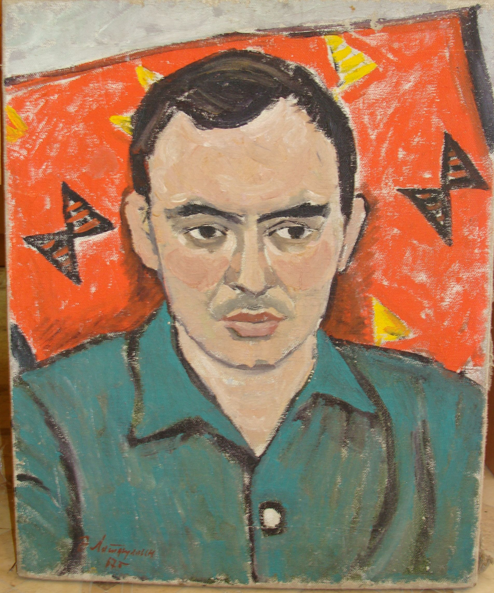

Перейти к содержанию
Уфа литературная
Информационно-краеведческий путеводитель
О проекте
/ Фотогалерея
Шафиков Газим Газизович

Из Литературного музея
(53)
Семейный архив
(24)
Фото памятных мест
(8)
Все категории фотогалереи
Powered by
Phoca
Gallery